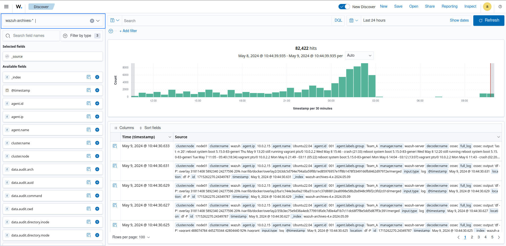

SOC - Centre Opérationnel de Sécurité
Plateforme complète de sécurité informatique intégrant Wazuh pour la détection d'intrusions et l'analyse des logs, Ansible pour l'automatisation du déploiement et la configuration des agents, Keycloak pour la gestion centralisée des identités et des accès (IAM), et Liferay pour le portail de gestion des incidents et le tableau de bord de supervision. Architecture scalable avec orchestration Docker.